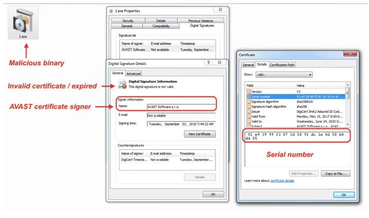

Los piratas informáticos engañan a los usuarios con descargas falsas de Windows 11 para distribuir el malware Vidar
Los dominios fraudulentos que se hacen pasar por el portal de descargas de Windows 11 de Microsoft intentan engañar a los usuarios
19 May 2022
para que implementen archivos de instalación con troyanos para infectar los sistemas con el malware de robo de información Vidar.
"Los sitios falsificados se crearon para distribuir archivos ISO maliciosos que conducen a una infección de robo de información de Vidar en el punto final", dijo Zscaler en un informe. "Estas variantes del malware Vidar obtienen la configuración C2 de los canales de redes sociales controlados por atacantes alojados en la red Telegram y Mastodon".
Algunos de los dominios de vectores de distribución no autorizados, que se registraron el mes pasado el 20 de abril, incluyen ms-win11[.]com, win11-serv[.]com y win11install[.]com, y ms-teams-app[. ]red.
Además, la firma de ciberseguridad advirtió que el actor de amenazas detrás de la campaña de suplantación de identidad también está aprovechando las versiones de Adobe Photoshop y otro software legítimo como Microsoft Teams para entregar el malware Vidar.
El archivo ISO, por su parte, contiene un ejecutable que tiene un tamaño inusualmente grande (más de 300 MB) en un intento de evadir la detección por parte de las soluciones de seguridad y está firmado con un certificado caducado de Avast que probablemente fue robado luego de la violación de este último en octubre de 2019.

Pero incrustado dentro del binario de 330 MB hay un ejecutable de 3,3 MB de tamaño que es el malware Vidar, con el resto del contenido del archivo relleno con 0x10 bytes para inflar artificialmente el tamaño.
En la siguiente fase de la cadena de ataque, Vidar establece conexiones a un servidor remoto de comando y control (C2) para recuperar archivos DLL legítimos como sqlite3.dll y vcruntime140.dll para desviar datos valiosos de los sistemas comprometidos.
También es notable el abuso de Mastodon y Telegram por parte del actor de amenazas para almacenar la dirección IP C2 en el campo de descripción de las cuentas y comunidades controladas por el atacante.
Los hallazgos se suman a una lista creciente de diferentes métodos que se han descubierto en el último mes para distribuir el malware Vidar, incluidos los archivos de ayuda HTML compilada (CHM) de Microsoft y un cargador llamado Colibri.
"Los actores de amenazas que distribuyen el malware Vidar han demostrado su capacidad de ingeniería social para que las víctimas instalen el ladrón de Vidar utilizando temas relacionados con las últimas aplicaciones de software populares", dijeron los investigadores.
"Como siempre, los usuarios deben tener cuidado al descargar aplicaciones de software de Internet y descargar software solo de los sitios web oficiales de los proveedores".
Más información: Hacker News